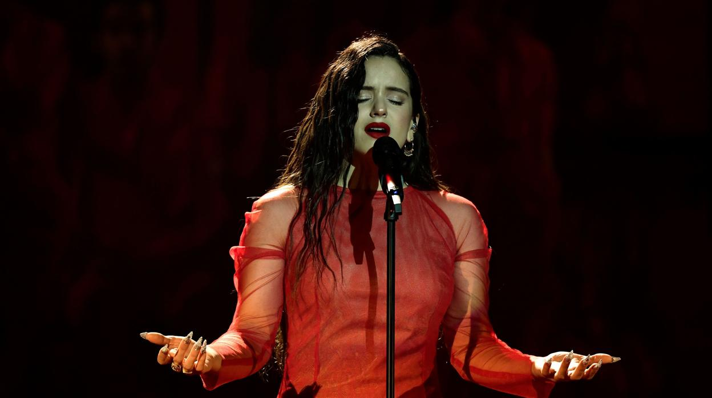

Rosalía nasceu a 25 de setembro de 1992 no Hospital Geral da Catalunha, e foi criada em Sant Esteve Sesrovires, uma pequena cidade na Catalunha. É a filha mais nova de Pilar Tobella, uma empresária que administra a empresa da família há décadas. O seu pai, José Manuel Vila, nasceu em Cudillero, Astúrias. Os seus pais separaram-se em 2019. Tem uma irmã mais velha, Pilar "Pili" Vila, que trabalha com Rosalía como estilista. Rosalía manifestou interesse pelas artes cênicas ainda muito nova, especialmente depois de descobrir a discografia de Camarón de la Isla. Iniciou a sua formação musical profissional aos 16 anos no Taller de Músics.Ela fez um curso de seis anos na academia. Começou a frequentar as aulas na escola Raval, mas devido às suas notas altas e múltiplas recomendações, transferiu-se para a Escola Superior de Música da Catalunha para terminar os seus estudos. Também trabalhou autonomamente como cantora independente em casamentos e bares musicais, pelos quais recebia "pouco mais de 80 euros ou trocando o trabalho por jantar". Durante esse tempo, Rosalía conheceu muitos artistas espanhóis underground que mais tarde teriam sucesso, como Zowi, Yung Beef, Kaydy Cain, Hinds e María Escarmiento.
Aos 15, competiu no programa de televisão Tú Sí Que Vales, embora não tenha sido selecionada. Em 2012 ela tornou-se a vocalista do Kejaleo, um grupo de música flamenca com Jordi Franco, Roger Blavia, Cristo Fontecilla, Diego Cortés e Xavi Turull. Eles lançaram um álbum, Alaire, em 2013. Nesse mesmo ano, Rosalía trabalhou profissionalmente em dupla com Juan "Chicuelo" Gómez para promover a trilha sonora de Blancanieves no Festival Internacional de Cinema do Panamá de 2013 em substituição de Sílvia Pérez Cruz e no Festival Grec de Barcelona para a obra de dança contemporânea De Carmen. Em 2013, participou na Association of Performing Arts Professionals (APAP) uma Conferência em Nova York, e foi a voz principal na culminação do Any Espriu 2014 no Palau de la Música.
Em 2015 colaborou com La Fura dels Baus num show que estreou em Singapura. Foi o ato de abertura do artista flamenco Miguel Poveda, acompanhado por Alfredo Lagos, no Festival Internacional de Música de Cadaqués, e também no Jerez Jazz Festival 2016. Trabalhou com Rocío Márquez na apresentação de seu álbum El Niño, produzido por Raül Refree, na Primavera Sound 2015. Em 2015, trabalhou também com marca de roupas Desigual e cantou o single do jingle da campanha "Last Night Was Eternal". Nesse mesmo ano, lançou "Un Millón de Veces". A música fazia parte do álbum beneficente Tres Guitarras Para el Autismo.[23] Todos os rendimentos beneficiaram estudos sobre o autismo.[23] Aos 20 anos, trabalhou como professora de flamenco e treinadora vocal.
Em 2016, colaborou com o rapper espanhol e ex-namorado C. Tangana em "Antes de Morirme".A música foi um sucesso e entrou na parada de singles espanhola em 2018, após o sucesso de outro trabalho de Rosalía. A colaboração recebeu atenção internacional quando foi destaque na trilha sonora da primeira temporada do programa espanhol da Netflix Elite (2018)
"Motomami" é o terceiro álbum de estúdio da cantora espanhola Rosalía. Lançado em 2022, o álbum representa uma fusão única de estilos musicais, combinando flamenco, pop e elementos de música urbana. As músicas exploram temas de amor, paixão e autoafirmação, com letras poderosas e uma produção musical inovadora. "Motomami" solidifica a posição de Rosalía como uma das artistas mais inovadoras e influentes da música contemporânea, oferecendo uma experiência auditiva envolvente e única para os ouvintes.

"Los Ángeles" é o álbum de estreia da cantora espanhola Rosalía, lançado em 2017. Este álbum é uma homenagem à tradição flamenca e apresenta uma abordagem mais crua e tradicional do gênero. As músicas de "Los Ángeles" destacam a impressionante voz de Rosalía e aprofundam-se nas raízes do flamenco, explorando temas de amor e saudade. Este álbum foi um marco inicial em sua carreira, estabelecendo sua reputação como uma das artistas mais talentosas e inovadoras da música flamenca contemporânea.
"El Mal Querer" é o segundo álbum de estúdio da cantora espanhola Rosalía, lançado em 2018. Este álbum é uma fusão audaciosa de flamenco com elementos contemporâneos, como música urbana e eletrônica. Inspirado na obra "Flamenca" do século 13, o álbum conta a história de uma mulher aprisionada por um relacionamento tóxico. As músicas exploram temas de amor, poder e liberdade, enquanto a produção musical inovadora de Rosalía a consolidou como uma artista revolucionária. "El Mal Querer" foi um marco crucial em sua carreira, ampliando os limites do flamenco e conquistando aclamação crítica.